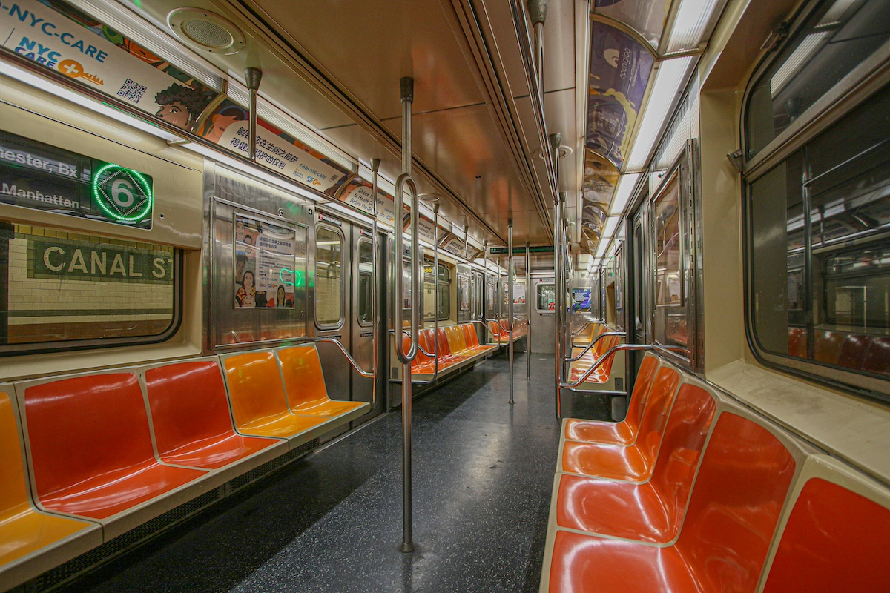
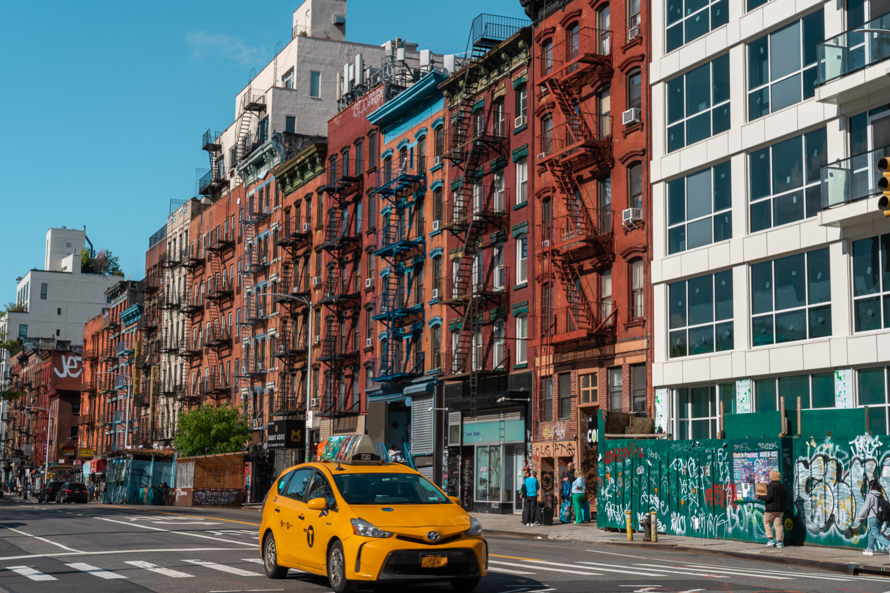
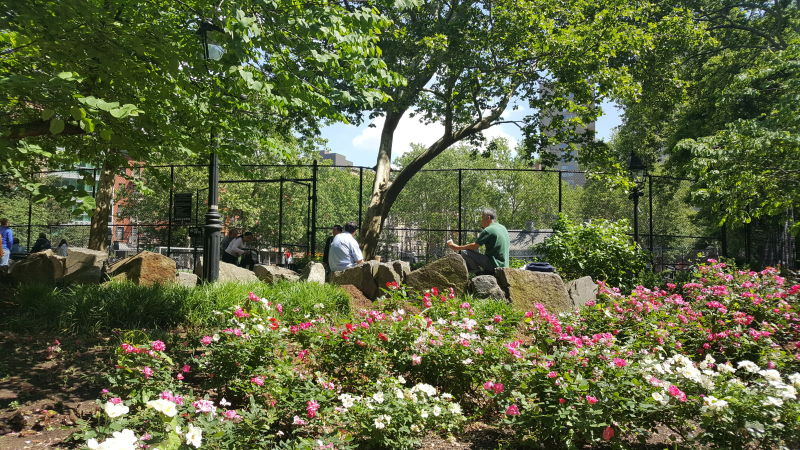

New York in Motion and Stillness

The subway represents constant motion and people moving endlessly beneath the city.

The Lower Eastside holds a still memory within a moving city.

Columbus Park serves as a vital, daily hub for elderly residents, particularly those of Chinese descent.

Chinatown pulses with movement and tradition at the same time, where crowded markets and bright signs create constant energy.